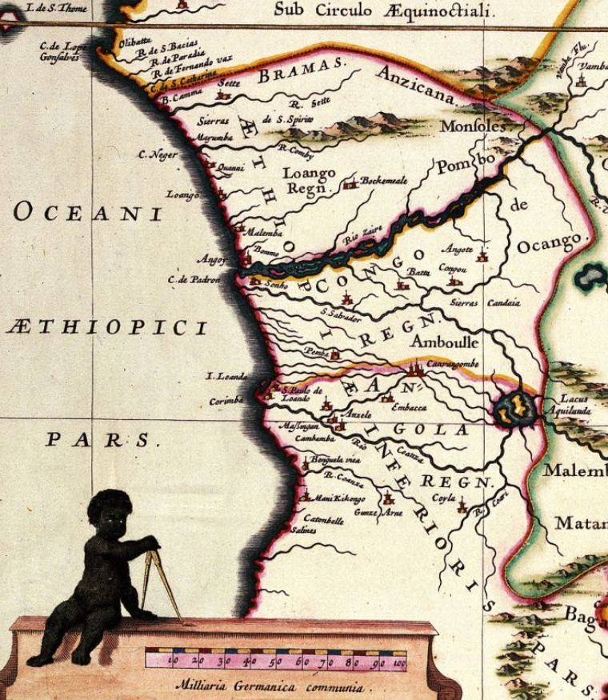
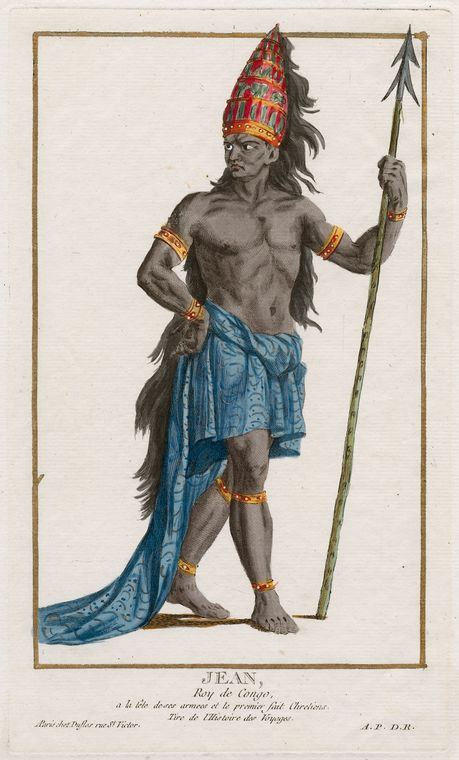
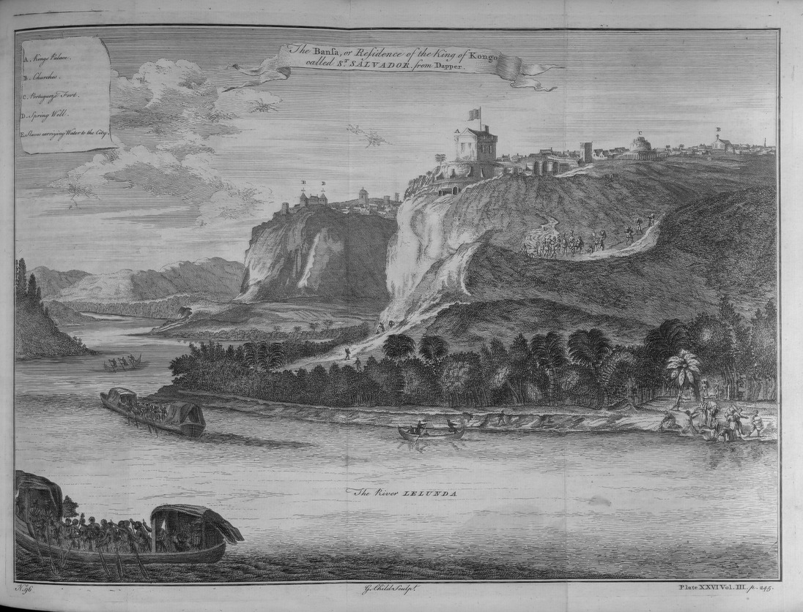
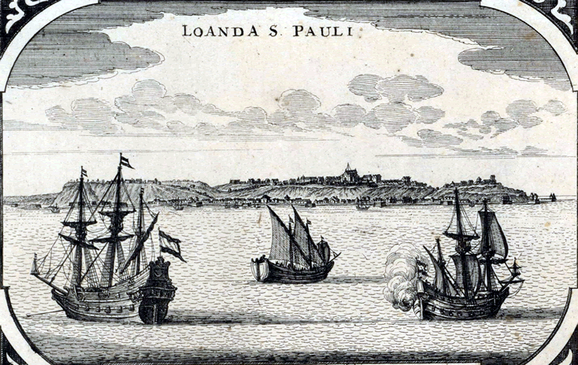
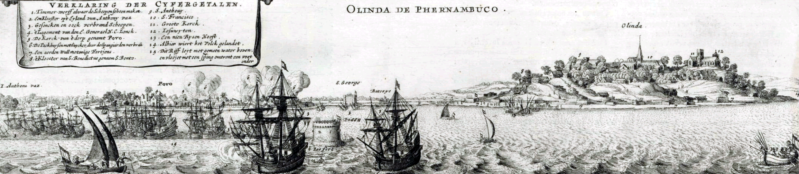
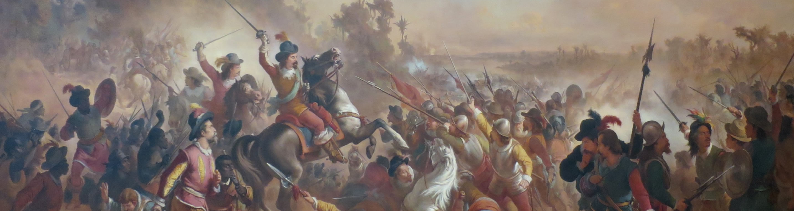
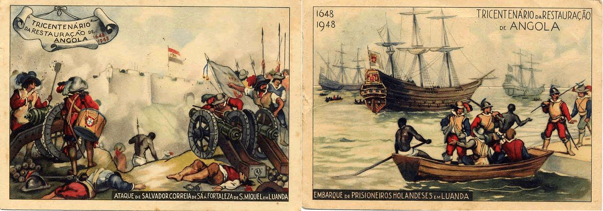

Concluindo a sequência dos dois últimos textos, neste terceiro comentarei o contexto do início das relações Luanda-Recife e como elas se desenrolaram.
Nele discutirei como as experiências Brasil-Angola contribuíram para a formação da população recifense e aproveitarei o ensejo para fazer uma crítica a existência de uma identidade nacional brasileira em detrimento às identidades populares.
Sim, porque claramente não são as mesmas. As ideias de "nação", "república", "Nordeste", "Sudeste", "Norte", "Sul" e tantas outras precisaram ser pinçadas na linha do tempo desse território continental para forçar uma narrativa única de
"Brasil".
O que tem a ver a batalha dos Guararapes com Angola? E como pode essa batalha ser a fagulha de uma "identidade brasileira"?
⚔️⚔️⚔️
🦀 A Identidade Nacional
Bem vindos à África Central
Vamos dar uma giro pela geografia e nos localizar antes de continuar. O texto é sobre
Angola, sim, mas não a Angola que conhecemos hoje. O território atual é o resultado das disputas políticas e bélicas dos angolanos contra Portugal e os Estados Unidos ao longo do tempo. No século 15, o termo "Angola" compreendia
uma região formada por vários reinos, destacando-se os reinos da Matamba, do Dongo e o reino do Congo.

Uma criança brinca com um compasso em uma ilustração decorativa no recorte do mapa da África de 1635 do holandês Wilhelm Blaeu.
O Congo ia do rio que dava nome ao reino ao norte, até os povos do Dongo ao sul. Sua capital era a cidade de Mbanza Kongo, que inclusive hoje se encontra dentro do território angolano. Digo isso porque há hoje dois países que levam Congo no
nome e que fazem fronteira com o norte de Angola, mas que não correspondem exatamente ao território daquele reino nos século 15 e 16. Os países que hoje se chamam Congo compreendem uma área muito superior àquela do rei do Congo (a quem
trataremos por enquanto pelo título de manicongo). Dado o prestígio daquela sociedade no século 15 pela costa ocidental da África, as cruzadas portuguesas logo encontraram o manicongo.
Rei do Congado
Os barcos portugueses alcançaram o delta do rio Congo em 1483, entrando em contato pela primeira vez com os congoleses. Esse rio nasce no centro do continente e desagua no oceano Atlântico. Suas águas definiram a história da África ocidental,
sendo palco das desgraceiras das caças portuguesas e do genocídio belga na história mais recente. Os portugueses visitaram a capital Mbanza Kongo e estabeleceram comunicação com aquele reinado cuja sociedade se encontrava tão ou
mais organizada do que as já complexas sociedades mercantis europeias da época.

"Jean", seu nome em francês, rei do Congo, em ilustração do século 19.
Originalmente em busca de escravizados e minérios, os jesuítas fizeram a frente portuguesa nos primeiros contatos e convencem o manicongo da época, Nzinga a Nkuwu, a se converter ao cristianismo. "Eu sou mais Jesus" -
pode ter dito ele, em sua língua nativa, enviesado ou não pelo vislumbre causado por aqueles navios de guerra e armas de fogo - "a ele eu entrego a minha fé" e em 1491 foi rebatizado de João primeiro do Congo. Adotou também os títulos
portugueses como "rei" e "rainha" e abandonou os originais do manicongado.
Para o desespero de alguns muitos, estabeleceu que a religião do reino do Congo seria o cristianismo também. A capital também foi rebatizada para São Salvador do Congo e logo o Congo foi reconhecido como soberano pela igreja, em resumo, uma
exceção da história ocidental dentro de um território feito colônia. Sua capital recebeu uma diocese no século 17, assim como já havia recebido a Bahia no Brasil (a diocese do Congo é mais recente do que a da Bahia, mas mais antiga do
que a de Pernambuco e do Rio de Janeiro). Enquanto os portugueses reconheciam essa igreja congolesa como submissa à de Lisboa, o Vaticano a reconhecia como independente, significando que os bispos do Congo responderiam direto à Santa Sé.

Visão imaginada da residência do rei do Congo pelo inglês Thomas Astley (1759). A ilustração é baseada na descrição do holandês Olfert Dapper que... nunca saiu da Holanda! Curiosa é a reação dos europeus ao confrontarem formas de organização
social fora da Europa até hoje.
Filhos e netos de Nzinga continuaram sua dinastia, tendo a igreja católica como parte indissociável da administração como nos reinos europeus. Tal predisposição do Congo a permanecer aliado ao Vaticano possivelmente foi a asseguradora da grandeza
desse reino da forma que ele foi registrado nos livros de história europeus e, consequentemente, nas nossas tradições.
E a vida, como vocês já sabem, é babado. A vida política congolesa também esteve sempre em conflito, inúmeros levantes civis contra a igreja ocorriam no reino e eram reprimidos pelo bem equipado exército cristão nativo financiado (e armado)
pelos europeus. Nem tudo eram flores meeesmo. Apesar da influência, os reinos vizinhos não se comportaram da mesma forma simpática aos brancos como o Congo. O porto de Pinda, na costa do reino, foi o primeiro porto português na África
central. A partir de Pinda foram enviados os africanos escravizados à ilha de São Tomé que, por fim, foram enviados para servir nas Américas.
Tentativas de fim do tráfico negreiro
Mas assim, o cara ver os portugueses levarem seus amigos e familiares como escravizados, tendo passe livre do rei do Congo para que os mercenários portugueses sequestrassem pessoas nos interiores do reino, é foda, tá ligado. Havia também pressão
interna das comunidades congolesas para que se parassem os ataques e sequestros. Em 1526, o rei do Congo Afonso primeiro, filho de João, anuncia ao rei de Portugal que o Congo assumiria o controle do seu próprio comércio:
Pedimos a vossa alteza [de Portugal] que nos queira ajudar a favorecer nesse caso [...] nossa vontade é que neste reino não haja trato de escravos nem saída para eles.
Para defender seus interesses em manter o sequestro de congoleses, o pedido não apenas foi rejeitado, como também o rei português ensaiou em sua resposta argumentos embrionários da teoria do livre mercado, para a felicidade de Adam Smith e
Pedro Dória e para o pânico do autor que vos fala. Disse o rei português:
O não quererdes vós que se levem mercadorias a Congo é contra a condição de todas as terras, porque a Portugal vem de todas as partidas do mundo e compra e vende quem quer.
A presente ameaça militar no território congolês somada a desenvoltura na arte do trambique argumentativo do português, que tentou minar as relações com o Vaticano, dificultaram a transformação do Congo em um reino como os da Europa, mas não
o impediu. O Congo em um momento passou a ter a atenção europeia que atrapalhava os interésses portugueses, tornando a relação de ambos os reinos instável porém cordial. Não obstante, a essa altura, os portugueses já haviam se espalhado
como um vírus para o sul.
😷😷😷
A rainha das kalungas de Angola
O Dongo e a Matamba eram governados pela angola (título equivalente a uma monarca como conhecemos)
Nzinga Mbande, a rainha Jinga. Figura forte da política angolana da época, Jinga nasceu da realeza do reino do Dongo e começou sua vida política como embaixatriz em missão em São Paulo de Luanda (hoje só "Luanda"), cidade portuária
portuguesa fundada em região invadida dos reinos de Angola. Seu objetivo maior era buscar o encerramento das caçadas portuguesas por escravizados no Dongo, paz que foi conquistada mas perdurou até Jinga assumir o trono do seu reino natal.
A história de Jinga, inclusive, é repleta de contradições. Não que vocês, leitores desse blog, se assustem com contradições, mas é preciso pontuar um detalhe da vida da rainha. Acontece que Jinga estava inserida dentro de um contexto onde seria anacrônico
analisar sua vida com as lentes morais atuais, e injusto contar os pormenores da sua vida com lentes morais externas às de sua cultura. Digo isso porque a historiografia clássica narra Jinga como uma bárbara que precisou "assumir papel
masculino" para reinar, tendo "haréns de homens afeminados", cometendo "antropofagia", "infanticídios" e outros recortes observados por europeus. Em adição, Jinga converteu-se ao cristianismo no final de sua vida,
fato oportuno à propaganda do colonizador. Ora, os registros europeus de Jinga precisavam servir aos interesses de destruição da sua reputação, gigante entre o povo oprimido, e portanto foram publicados na Europa exaltando a superioridade
moral europeia frente aos demais povos da África. Há muitos exemplos na filosofia europeia de como essa reputação de Jinga contaminou discursos sobre as sociedades africanas. Um exemplo vem do filósofo Hegel, em sua obra Razão na história,
onde utiliza da rainha como figura parte de um desenvolvimento humano anterior na África, narrativa que se encaixa no senso comum construído no século 17 e que se perpetuou pelos séculos em diante como critica Alencastro em O Trato dos Viventes.
Jinga era mesmo uma líder militar invicta que causava medo aos colonizadores. As operações predatórias portuguesas sertões africanos a dentro causavam ofensa ao seu reino mas nunca saíram do controle. No interior, a rainha defendeu o território
do Dongo, impediu a penetração dos sequestradores e segurou esse avanço por décadas. No litoral, em Pinda, Luanda e Benguela estavam as kalungas, as praias, por onde os homens e mulheres feitos escravos desembarcavam e embarcavam em grandes
feiras de gente, sendo preparados para cruzar o Atlântico. Porém de Luanda, de repente, chegou a notícia à rainha que holandeses haviam tomado o porto. Jinga viu ali uma oportunidade.
Ilustração de Jinga guiando seu povo da obra do italiano Antonio Cavazzi "Um capuchinho na África negra no século 17".
Primeira guerra mundial
É que os doutor só quer chamar de guerra mundial se tiver Inglaterra e Estados
Unidos como protagonista tás entendendo...
Pois eu digo que houve uma primeira guerra digna de ser mundial no século 17. Explico: o rei espanhol herdou o trono de Portugal e seus territórios. Por sua vez, Portugal herdou todo os conflitos que a Espanha tava metida (kkkkkk).
Na época, a Espanha era A Mais Odiada no ocidente: incas, astecas, povos caribenhos, africanos diaspóricos, ingleses, italianos e holandeses. Todo mundo estava em conflito com a Espanha. Por A+B, se por causa da herança Portugal passou
a ser parte da Espanha, Todo Mundo Passou A Estar Em Conflito Com Portugal.
Continuo: a famosa união ibérica iniciou-se em 1580 e o Recife já sentiu quente 10 anos depois a invasão inglesa que comentamos em um outro texto do blog (cuja referência vou deixar no fim da página). Nessa época, os ingleses invadiram também
ilhas espanholas no Caribe, tomando, por exemplo, a Jamaica. Na invasão do porto de Pernambuco, os ingleses foram ajudados pelos holandeses, o que facilitou 30 anos depois a tomada holandesa definitiva. Na mesma época, a Holanda (ou Países
Baixos) conseguiu sua independência da coroa espanhola (estavam sob domínio real da Espanha assim como Portugal). A Holanda também invadiu as ilhas espanholas do Caribe (Aruba e Curaçao são exemplos), invadiram o Suriname, os portos africanos
da Guiné e São Tomé, além dos portos portugueses e espanhóis no oceano Índico e no Pacífico. Foi aí o momento em que a Holanda invadiu o porto de Luanda, para a sorte de Jinga. Pois bem, já estamos em uma guerra mundial o suficiente ou
quer mais?

Ilustração de 1700 representando o porto de [São Paulo de] Luanda sob domínio da Holanda.
Invasão holandesa cá e lá
Em 12 de fevereiro de 1630, metade da frota dos navios holandeses desembarcaram soldados na praia de Pau Amarelo, em Pernambuco, enquanto a outra metade "fazia chover bala de artilharia" no porto de Recife. A narração da invasão em si e de
como os moradores reagiram a ela merece um texto futuro a parte. Toda a população já esperava que isso fosse acontecer e já estava até desacreditada de que algo pudesse ser feito, dadas as novas condições impostas para redução de gastos
da coroa em Madri. Dentro de um cenário caótico de desigualdade piorado pela postura dos senhores de reter os impostos visto que não havia contrapartida do governo, disse um frei que passava por Olinda durante um sermão de missa:
"De Olinda a Holanda, não há aí mais que a mudança de um i em a; e esta vila de Olinda se há de mudar em Holanda, e há de ser abrasada pelos holandeses antes de muitos dias, porque falta a justiça da terra, há de se acudir a
do céu."
De Pau Amarelo até Recife, destruindo Olinda no caminho, os holandeses se estabeleceram na ilha de Antônio Vaz, de onde poderiam administrar o porto da vila do Recife e de onde tinham acesso rápido ao interior pelas costas. Como popularmente
sabido, a administração tratou de cortar os rios com pontes, duas delas até hoje presentes (não com a mesma estrutura): a ponte que liga o bairro do Recife ao de Santo Antônio (hoje ponte Maurício de Nassau) e a que liga o de São José
à Boa Vista (hoje ponte da Boa Vista ou de ferro).

Ilustração de 1677 retratando a chegada holandesa a Pernambuco, com o ataque ao porto e tomada da vila de Olinda.
Nas várzeas do Capibaribe, a população recifense ganhou aí uma oportunidade de fuga. Com os senhores refugiados no arraial do Bom Jesus (fortificação em Casa Amarela) ou em fazendas do litoral sul antes da chegada dos holandeses, o povo oprimido
dos engenhos pôde fugir para os terrenos desocupados ao redor do Recife. Caminho aberto, pelas fazendas que passaram, os holandeses ou as atearam fogo, ou as tomaram para si.
Ainda, os holandeses contavam com uma vantagem que nem esperavam: havia apoio local. No nosso imaginário, há apenas 2 tipos de habitantes de um engenho: os escravizados e os senhores. Mas na realidade, além dos escravizados, a segunda maior
faixa da população era de trabalhadores livres, tanto os empregados na repressão contra os negros, tanto quanto outros agricultores de produtos para consumo local. Os novos invasores encontraram uma brecha para a tomada do poder político:
os senhores e trabalhadores livres que decidiram ficar observavam nos holandeses uma oportunidade de melhor gestão, livrando-se da desconfiança que a governança portuguesa trouxe para os pagadores de impostos. Alegava-se que os altos impostos
pagos, principalmente depois que Madri passou a gerir o porto pernambucano, não se via em benfeitorias como manutenção do porto e segurança. Semelhanças com a classe média ou mera coincidência?
Brecha Política
As fazendas cujos senhores de Pernambuco haviam se refugiado foram mais tarde alcançadas e varridas pelos holandeses por completo, estabelecendo-se a Nova Holanda do Maranhão até Porto Calvo, no rio São Francisco. Os senhores, por sua vez,
conseguiram em parte fugir para o Rio de Janeiro, onde iniciaram um levantamento de fundos para organizar um contra-ataque aos holandeses sem a participação de Portugal, muito menos da Espanha.
Enquanto portugueses e flamencos se engalfinhavam, famílias se refugiavam em crescentes comunidades ao redor da capital de Pernambuco. Pouco antes da chegada dos holandeses, apareceram no Brasil os quilombos. A formação "quilombo" era,
no Congo-Angola, um campo militar dos jagas - comunidade multiétnica de combate - que resistiam aos avanços europeus. A forma que o termo foi aplicado às comunidades no Brasil é material de estudo de muitas teses, mas se torna óbvio
perceber que essa formação comunitária aqui tem por objetivo resistir aos avanços europeus. Os quilombos nos territórios brasileiros eram comunidades majoritariamente africanas, mas habitaram neles também nativos, brancos e mestiços. Formaram
junto às aldeias dissidentes unidades de contraponto anticolonial.
Os holandeses ficaram sabendo dos novos quilombos e das tentativas de assaltos indígenas aos engenhos assim que se estabeleceram em Recife. Juntos aos poucos senhores e influências que em Recife permaneceram, os holandeses puderam se organizar
contra as populações caetés, potiguares e aquilombadas. O reestabelecimento da "ordem portuguesa", ou seja, a ordem política com exceção do domínio religioso que passou a ser protestante, era demanda prioritária do senhoril local. Além
disso, para o trato da cana, a demanda dos negócios e a possível inviabilização do negócio em larga escala diante da escassez de mão-de-obra pressionava os holandeses para tomar controle ao acesso a mais escravizados. Tanto para que a
produção continuasse em ascensão, e para que se pagassem as perdas ocorridas durante o período de invasão e instabilidade política, era necessário que o motor econômico colonial continuasse funcionando: haveria de se trazer mais escravizados.
Angola é a fonte da força de trabalho que faz essas moendas do açúcar girarem. Após o convencimento das altas câmaras nos Países Baixos, em 1641, os holandeses organizam no porto do Recife navios de guerra para invadir Luanda.
Jinga e Nassau
Sabendo da tomada de Luanda, a rainha Jinga dos reinos do Dongo e Matamba e o rei do Congo se voltam oportunamente contra a intimidação e assédio luso. O ataque de Jinga e seus jagas encurralou os portugueses na fortaleza de Massangano, à
beira do rio Cuanza, no interior da terra. Angola passou então a ser uma colônia holandesa mas a população continuou a ser explorada a fim de fornecer mão-de-obra escravizada na América. Os Países Baixos ocuparam Angola por 7 anos (1641-48).
882 pessoas foram embarcadas para servir no Caribe, e 20141 pessoas foram embarcadas para servir nas colônias brasileiras. Delas, 16336 conseguiram desembarcar vivas em Recife segundo os dados do banco slavevoyages.org.
Fluxo de escravizados entre 1641 e 1648 em navios operados por holandeses.
Batalhas de Pernambuco
Mesmo com tamanha quantidade de escravizados trazidos a Pernambuco, os senhores locais consideravam que os holandeses não eram eficazes em cobrir suas demandas. Em 2 décadas de presença holandesa em Pernambuco, o preço de escravizados não
parou de subir, aumentando também o custo de produção e o preço final do produto por consequência. Com a marinha inglesa protegendo a retaguarda holandesa, era praticamente impossível para Pernambuco expulsá-los. Entretanto não houve desânimo
da elite local em rebelar-se contra os flamencos, eram frequentes as tentativas de ataque dos senhores nas chamadas "estâncias" ao redor da cidade maurícia. Técnicas de guerrilha eram aplicadas pelas tropas senhoriais formadas por escravizados,
nativas e também pessoas livres, contra as comunidades aliadas aos holandeses. Pouco a pouco a sensação anti-portuguesa anterior a invasão se transformou em sensação anti-holandesa e passou a haver um convencimento geral de que, devido
aos altos custos e baixos lucros, era melhor que se restaurasse o domínio português.
O acirramento das tensões eclodem nas batalhas dos Guararapes cujo protagonismo de figuras nativas, lideranças das já citadas tropas, dá um prato cheio para os nacionalistas que pinçam acontecimentos seletos para construir uma "identidade
nacional". Esse protagonismo é assunto que também necessita de uma discussão exclusiva, uma vez que ambos os lados possuíram apoio de comunidades locais diferentes. Passadas as batalhas dos Guararapes, a capital ainda contava com a defesa
de seus fortes e das marinhas holandesas e inglesas, defesas que nunca chegaram a ser perpassadas.
🏰🏰🏰
Na segunda metade do século 17, a guerra religiosa entre protestantes e católicos, ou holandeses e espanhóis, começou a ter um desfecho. Discutidas as medidas econômicas que garantiram a independência holandesa na Europa e acesso aos bens
das colônias espanholas, tanto pelos Países Baixos quanto pela França e Inglaterra, ficou acertado também a devolução de algumas das colônias invadidas. Entre elas, em 1645, a colônia da Nova Holanda cuja capital era Mauritsstad, ou como
viria ser conhecida: Recife.
Mesmo depois de abandonarem o Brasil, os holandeses mantiveram o controle das rotas escravistas do Atlântico. Isso significava que o preço da mão de obra escrava ainda seria regulado pelo mercado holandês. Reféns, os senhores brasileiros de
orgulho inflado pelas vitórias de Pernambuco se prepararam para estender a ofensiva iniciada em Recife e em Jaboatão até o outro lado do Atlântico. Uma guerra pra lá de mundial.

Recorte da problemática-&-falsa representação da batalha dos Guararapes por Victor Meirelles pintada entre 1875~79. Essa pintura faz parte da criação de um mito identitário nacional e é comum aparecer em livros de história da educação básica.
Vai deixar é?
Senhores por toda a parte, do Pará ao rio da Prata, viram-se em extrema desvantagem com a presença holandesa. Não havia a "liberdade de comércio" outrora permitida pelos portugueses. Essa camada dominante brasileira, esses senhores de engenho,
descendentes dos primeiros europeus que pelas Américas desembarcaram cerca de 100 anos antes, e outros portugueses recém chegados, estavam mesmo preocupados com a produtividade de suas fazendas e seus lucros. Existia um mercado interno
de escravizados, mas não era o suficiente para dar conta da demanda. Era necessário portanto que houvesse a continuidade da engrenagem diaspórica africana. Dada a escassez de escravizados pelo litoral brasileiro, como seria possível fazer
esse negócio lucrativo novamente?
Os paulistas tinham uma sugestão: escravizar novamente os nativos. Entretanto, era sabido que o emprego do trabalho indígena traria um prejuízo ainda maior às fazendas, comportamento percebido por toda a América. Para justificar o prejuízo
e então manter os nativos longe do trabalho nas fazendas, os senhores alegavam que os povos originais eram por natureza preguiçosos. Esse é um argumento perigosíssimo de se reproduzir sem uma crítica. A realidade é que aquelas pessoas
conheciam o terreno como ninguém e, por serem eles os originais da terra, sua força política inerente tornava o domínio europeu extremamente difícil ou impossível. Cooptando a narrativa, as coroas espanholas e portuguesas criaram leis
que impediram o uso do trabalho escravo indígena e publicaram alvarás que empoderaram os líderes nativos para a criação de pequenas elites locais, como explicado em um texto anterior ("Miscigenação", ref. no final da página).
Foram justamente essas leis que haviam dado o respaldo jurídico para o início da exploração dos povos africanos transportados para a América no século anterior.
Convencidos de que as fazendas estavam carentes de força de trabalho escravo, os senhores do litoral organizaram entre si um exército, com participação de investimentos de fazendas do Rio, Bahia e Pernambuco, e uma frota de navios no porto
do Recife para uma invasão brasileira de Luanda. Os senhores paulistas ignoraram a movimentação, buscando empregar em suas fazendas trabalho indígena mesmo contra o que legislava a coroa portuguesa. São Paulo ainda não estava interligada
à malha escravista Atlântica. Os bandeirantes paulistas, requisitados por todas as capitanias no desmantelo dos quilombos e de aldeias, partiram nessa mesma época em uma outra cruzada rebelde à coroa: a "bandeira das fronteiras" pelo interior
do continente.
Batalhas de Angola
A economia fundada na produção de açúcar amarrou-se de forma dependente do trabalho escravizado de uma forma que, caso houvesse prejuízo no Brasil, haveria prejuízo para Portugal, dada a grandeza da produção. Se acreditava que sem o Brasil
não haveria Portugal, e igualmente, sem Angola não haveria Brasil. Para defender seus interesses, a coroa portuguesa concedeu a permissão para que o exército brasileiro resgatasse Angola da posse holandesa. Partiram para Luanda então as
tropas de brancos, indígenas, africanos livres e mestiços de todas as colônias concentrados no porto de Recife. Muitos dos comandantes e tropas das batalhas pernambucanas contra os holandeses faziam parte desse exército. Eles desembarcaram
em Angola e entraram em confronto não apenas com os holandeses, mas também com os exércitos das populações originais.
De sul a norte de Angola, os brasileiros foram tomando praia a praia, confrontando grandes exércitos jagas, resgatando os portugueses anteriormente encurralados por Jinga e invadindo até mesmo o reino cristão do Congo. Tal invasão de um reino
como o Congo era contra a vontade da coroa portuguesa, que via a guerra contra outros reinos cristãos como uma guerra não-justa conforme a tradição europeia. Ao final da conquista, vários brasileiros reivindicaram postos de governadores
na colônia de Angola, tornando o território administrado quase em sua totalidade por brasileiros.
O interesse era óbvio: a continuidade da indústria agro no Brasil e do lucro de Portugal onde ambos dependiam do braço angolano. Para os brasileiros, substituir os portugueses em Angola por senhores do próprio Brasil era mais vantajoso
para o controle da engrenagem escravista como um todo. Assim, os sequestros no Congo, Dongo e Matamba se intensificaram. Ao contrário dos reinos da Europa, os brasileiros tratavam as comunidades do Congo da mesma forma que tratavam os
quilombos no Brasil: povos rebeldes e ajuntamento de negros fugidos. Os mesmos governadores que ordenaram a caçada dos quilombos em Pernambuco continuaram a prática na África.
Além dessa, outra experiência brasileira cruzou o Atlântico: o tipo de guerra aplicada contra os nativos do Brasil. Batalhas sem quartéis, o avanço rápido dentro das matas, extermínio das populações nativas que recusavam a se subjugar, batalhas
com armas de fogo adaptadas à chuva e ambientes úmidos. Todas essas práticas eram estranhas aos senhores portugueses em Angola e nas colônias do Oriente, onde sempre foram sufocados pela superioridade militar nativa. Já os brasileiros
não enxergavam os limites políticos antes estabelecidos pela igreja europeia e pela organização social africana. Governadores brasileiros estudaram até mesmo a possibilidade de travessia da África pelo continente para se ter acesso à colônia
portuguesa do reino do Monomotapa, atual Moçambique, onde cogitavam sequestrar mais pessoas (Moçambique só se ligou ao mercado negreiro do Atlântico no século 19). Em conclusão, todas as ofensas previam o aumento do fluxo de escravizados
para o Brasil. Apesar do estranhamento, a metrópole portuguesa reconheceu os esforços brasileiros em Angola e concedeu os títulos de governadoria entre os comandantes. Eles permaneceram em Angola gerações a dentro, marcando a história
daquele povo até hoje. Curiosamente, tal acontecimento não é sequer observado na educação básica do Brasil, nem minimamente discutido em nossa sociedade. Se as vitórias sobre os holandeses marcam a formação de "um povo brasileiro", de
uma unidade nacional, por que a invasão de Angola não faz parte do conto da Identidade Brasileira?

Ilustrações de propaganda portuguesa sobre o tricentenário da "reconquista" de Angola em 1948. Note quem são os protagonistas na historinha retratada nas cenas, passadas em Angola, e quem opera a linha de frente na batalha da esquerda e o
trabalho braçal na direita. Na legenda da imagem da esquerda, "Salvador Correia de Sá" é citado. Esse indivíduo foi um brasileiro governador do Rio de Janeiro que participou da invasão holandesa e por lá assumiu o posto de governador.
"História do Brasil"
A historiografia "oficial" desse país do tamanho de um continente é contada de um ponto de vista paulista e carioca. Ela começou a ser construída na transição do século 19 para o 20 com a fundação das instituições da monarquia e da república
para o registro histórico. Todas essas instituições se sediavam ou na capital do império, Rio de Janeiro, ou na sede do poder econômico republicano oligárquico e cafeeiro, São Paulo. Lugares onde o reconhecimento dessa parte da história
de envolvimento pernambucano, angolano e holandês não é de interesse.
Um exemplo: a coroa portuguesa, portanto a historiografia de Portugal, reconheceu o esforço brasileiro em Angola. Logo, aquelas guerras passaram a fazer parte da continuidade da história portuguesa e da história do país invadido, Angola. São Paulo se
recusou a participar, até então afastado do ciclo negreiro do Atlântico e rebelde à vontade de Portugal, dirigiu-se ao interior nas bandeiras das fronteiras, que foi rotulada pela coroa como "inútil". Nas escolas brasileiras, aprendemos
sobre as bandeiras das fronteiras, mas sobre a invasão de Angola, não.
É muito comum também que o período de domínio holandês, notavelmente ocorrido entre a Amazônia e o rio São Francisco, com capital em Pernambuco, seja observado pela historiografia oficial como um evento "do Brasil", em contraponto a eventos "de São Paulo"
ou "do Rio de Janeiro" em comparação com a forma que foi popularizado o mito do grito de independência do país, por exemplo. A história só passa a ser analisada com granularidade local caso os fatos tenham ocorrido no Rio de Janeiro ou
em São Paulo, caso contrário, o fato compõe a "história do Brasil". Tal análise granular é importantíssima para um povo reconhecer a si mesmo e reconhecer a terra que ele nasceu, habita e nela produz.
Esse vício é reproduzido até pelos grandes nomes mais críticos da historiografia brasileira, como aconteceu com o mineiro Darcy Ribeiro, que em sua análise da formação desse povo nacional narra os acontecimentos como síncronos dentro de um espaço de proporções
continentais a fim de criar uma narrativa única, considerando os quadros locais como meros detalhes que apenas compõem um quadro homogêneo maior. Entretanto, os acontecimentos das minúsculas ocupações no sudeste do atual Brasil em comparação
com as de Pernambuco e da Bahia no século 16 é que deveriam ser o mero detalhe aqui.
Os governadores brasileiros em Angola nos tempos pós-reconquista foram personagens proeminentes da política nacional brasileira, mas especificamente das capitanias do norte. Não quero dar foco a nenhum deles por ainda serem personagens brancos parte de
uma classe em disputa contra o povo, mas é importante mencionar que a ligação de Luanda com Recife naquele momento evidencia uma sensação presente naquele tempo: havia a impressão na época de que Pernambuco fazia fronteira com Angola.
Os acontecimentos da vida em Luanda eram repercutidos rapidamente em Recife, onde o trânsito de pessoas entre os dois portos era intenso e, por períodos, maior do que o contato entre Luanda e Lisboa.
Por aqui chegavam direto de Luanda as notícias da bravura do rei do Congo e da rainha de Angola, as notícias da resistência contra a dominação dos governantes brasileiros e europeus. Com escala no Rio de Janeiro, se transportou para Angola a mandioca,
a cachaça, o fumo, os búzios baianos, o milho e vários itens comuns no Brasil. Por sua vez, o africano foi, como registrou Clóvis Moura, agente povoador das terras brasileiras. Pernambuco era o primeiro porto de contato com esses indivíduos.
O povo recifense é caeté e angolano. O Recife e o Brasil carregam crises identitárias seculares por não olharem para si, por negarem seus povos de características plurais e suas histórias, fazendo inevitavelmente que o futuro do país seja
o confronto de seu passado.
Popular
E aqui se formaram muitas comunidades vítimas da diáspora, originais de todo o ocidente africano. Esses povos em contato com as comunidades nativas das Américas e com os europeus, desenvolveram tradições continuadas de suas terras natal em uma economia
escravista tensionada pela contradição entre a manutenção das mordomias do senhor e entra a urgência da sobrevivência do escravizado.
As notícias que chegavam de Luanda traziam, para a classe dominante, um medo que se mantem até hoje de que as revoltas de São Tomé, do Congo, de Angola, de Palmares, do Haiti e das ruas de todas as Américas retornarão e libertarão a senzala e a favela
que existem para lhe sustentar.
Já o povo construiu, com as notícias que chegavam nos navios, imagens de um futuro resgate dessa opressão, o sonho de que Nzinga e Mbanza retornarão triunfantes, tão reis quanto os reis dos brancos, para decretar o fim de seu sofrimento.
Em homenagem ao rei e ao reino do Congo há o congado, há dois países!; Já o nome da rainha do Dongo e da Matamba, Jinga, mistura-se como termo da capoeira, como palavra de ordem das músicas da tradição oral diaspórica, como verbo mais sonoro do português
para "oscilar"; No maracatu desfilam esses monarcas, ao som da percussão africana e aos passos ligeiros dos nativos de Pernambuco; Entre muitas outras tradições que, pouco a pouco, cruzam as vivências das classes sociais da região e assim
fazem nascer seus costumes, provenientes das contradições, das dores, das saudades e do imaginário das notícias de liberdade que chegam a esse povo, cuja história carrega no braço a calunga e a kalunga, Angola.